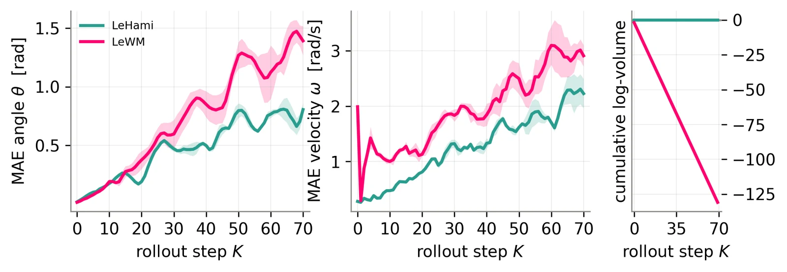
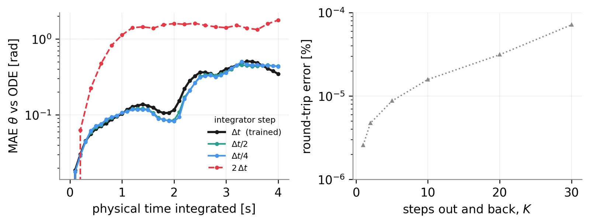

- encoder는 프레임을 잠재 상태로 바꾼다.
- predictor는 지금 잠재 상태와 행동으로 다음 잠재 상태를 계산한다.
- 계획에는 여러 스텝의 예측이 필요하다. 그래서 predictor는 자기 예측을 다음 입력으로 쓴다. 이것이 rollout이다.
- 한 스텝은 한 프레임(0.1초)이다.
스텝마다 부피가 2% 줄면, 50스텝 뒤에 36%만 남는다.
LeHami는 JEPA world model이다. predictor 자리에 학습한 Hamiltonian의 leapfrog 스텝을 쓴다. 그래서 모든 예측 스텝에서 잠재 상태의 부피가 바뀌지 않는다.
Yalovetzky, Balestriero, LeCun. arXiv 2610.15267 · 짧은 문장판(ASD-STE100 방식) · 2026-10-30 · Wonder
스텝마다 부피가 2% 줄면, 50스텝 뒤에 36%만 남는다.
스텝당 배율은 설명용 가정이다.
두 점이 한 점이 된다. 그래서 부피가 줄어든다.
설명용 예시: 길이 1 m 진자의 0.1초 뒤 상태를 직접 계산했다.
이 흐름에서 상태 집합의 모양은 바뀐다. 그러나 부피는 바뀌지 않는다(Liouville 정리).
각 단계는 한 값만 바꾼다. 바꾸는 양은 다른 값에만 따른다. 그래서 각 단계의 행렬식은 1이다. K와 V의 가중치와 관계없이 1이다.
주황은 V의 기울기다. 파랑은 K의 기울기다. Δt는 0.1초다.
논문은 p의 크기를 맞추는 대각 행렬 S도 학습한다. S는 q 갱신에만 들어간다. 학습 후 S의 값은 0.95–1.09다.
논문은 세 결과를 증명한다.
이 결과는 모든 가중치와 모든 행동 순서에서 참이다.
주의: 부피 보존은 오차 증가를 막지 못한다. 모양은 크게 바뀔 수 있다. encoder에는 정규화(SIGReg)가 계속 필요하다. 입력이 같은 두 상태는 구분하지 못한다. 그래서 상태에 속도가 있어야 한다.
필터는 속도의 부호도 지킨다.
실제 진자를 0.1초 간격으로 계산한 각도 네 개다.
p_t = (0.45\,q_{t-3} - 0.85\,q_{t-2} - 0.65\,q_{t-1} + 1.05\,q_t)/\Delta t. 학습 타깃의 p는 앞뒤 두 프레임을 쓴다: (-2,-1,0,1,2)/(10\Delta t).
baseline LeWM과 encoder, 잠재 차원 64, 데이터가 같다. predictor만 다르다. LeWM의 predictor는 최근 잠재 상태 세 개를 보는 transformer다.

논문 Figure 4 (초록 LeHami, 분홍 LeWM)

논문 Figure 5
에피소드당 연산은 15 TFLOP 이하다. CEM이 행동을 찾고, 몇 스텝마다 다시 계획한다. LeHami는 속도 목표에서 6스텝마다 다시 계획했다. 대칭 가중치 [a, b, a] encoder는 속도의 부호를 잃는다. 위치와 속도를 함께 맞히는 목표: 한 프레임 LeWM 0.142, 대칭 0.400, 비대칭 0.636, LeHami 0.304.
Romina Yalovetzky, Randall Balestriero, Yann LeCun. LeHami: Symplectic Latent Dynamics for World Models. arXiv 2610.15267, 2026
논문에서 온 것: 방법, 증명, 실험 수치, Figure 4·5. 직접 계산한 것: 2% 예시, 두 진자 상태와 평균, 부피 그림, Euler 비교, 필터 예시.